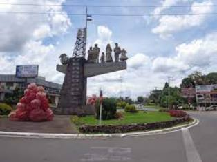
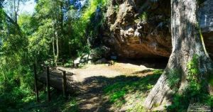
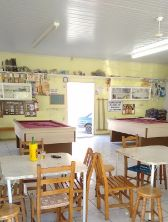

Introdução
Veranópolis é um município brasileiro da região Sul, no estado do Rio Grande do Sul. É considerada a capital brasileira da longevidade e a terceira cidade com maior longevidade média da população no mundo. Também é conhecida como a "Princesa dos Vales".
Se queres uma explicação melhor e mais detalhada, esse vídeo produzido pela Prefeitura de Veranópolis dá uma introdução à cidade.
Sumário
O restaurante Giratório

Localizado no bairro Medianeira, é um dos locais mais reconhecíveis da cidade.Conhecido por seu cardápio à la carte de menu italiano, com uma variedade de vinhos e massas, além de ter uma vista incrível.
Se ficou com vontade de visitar, é recomendado dar uma olhada nos preços e horários de atendimento, portanto, porque não visitar o Site Oficial?
Cascata dos Três monges

A Cascata dos Três Monges fica em propriedade particular de acesso gratuito, deve-se abrir a porteira, entrar, fechar e ao sair o mesmo processo pois, existe animais soltos na propriedade. Existe sinalização, lago, mirante da queda d'água de 112 metros de altura. É um local conhecido por sua beleza incrível.
Para mais informações visite esse site de trilhas.
Caverna Indígena
Conhecer a caverna indígena é para quem gosta da natureza íngrime e para os apreciadores de caminhadas. Para chegar ao local, encontra-se um espaço de estrada de chão. Do lado de fora, acredita-se ser impossível entrar mas logo na entrada já se constata a possibilidade de descobrir espaços para embrenhar-se e descobrir uma beleza de pedra indescritível.
Quer mais informações? Veja o Site da Prefeitura de Veranópolis.
| Menções Honrosas | ||
|---|---|---|
| Bar do Guerra | 
| Local de reunião de jovens e idosos, um local marcado de história dos grandes competidores de Bocha de Veranópolis |
| Bar do Polaco |  | O maior local de reunião dos adoradores de pinga da cidade. Um local onde se joga muitas partidas de bisca |